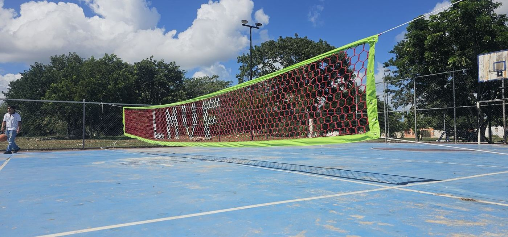

Uno de los errores que más encuentro al comprar redes deportivas es comparar únicamente el precio.
Lo entiendo: cuando dos redes parecen similares, es natural elegir la más económica. Pero la diferencia importante puede aparecer después, cuando una conserva su función y otra comienza a deteriorarse, obliga a repetir la instalación o deja residuos en la cancha.
En redes perimetrales, de portería, voleibol o básquetbol existen muchas alternativas. Para compararlas bien, hay que revisar qué estás comprando, cómo se utilizará y cuánto costará mantenerlo funcionando. Estos son los errores que recomiendo evitar.
1. Elegir solo por el precio de la red
La frase “lo barato sale caro” tiene sentido cuando el ahorro inicial termina convirtiéndose en un reemplazo prematuro.
En mi experiencia, algunas redes perimetrales de buena calidad han alcanzado entre ocho y diez años de uso en condiciones favorables, mientras que otras han presentado deterioro importante en pocos meses.
Lo importante es saber qué respalda la diferencia de precio: material, confección, tratamiento, antecedentes de uso y atención del proveedor. Antes de decidir, pregunta qué producto estás comparando y para qué condiciones está recomendado.
2. Olvidar la instalación y el retiro
Comprar la red es solo una parte del gasto.

Si contratas instaladores, debes considerar mano de obra, accesorios, traslados y equipo de acceso. Si la colocas por tu cuenta, también estás invirtiendo tiempo, herramientas y trabajo.
Cuando la red necesita reemplazarse, parte de esa inversión se repite. Además, hay que retirar la anterior. El desmontaje puede resultar complicado si la red está a gran altura, tiene numerosos puntos de sujeción o se encuentra en un lugar de difícil acceso. En algunos proyectos puede requerir nuevamente andamios o plataformas.
Por eso recomiendo comparar el costo completo:
| Momento | Gastos que conviene considerar |
|---|---|
| Compra inicial | Red, envío y accesorios. |
| Colocación | Mano de obra, tiempo y equipo de acceso. |
| Uso | Revisiones, mantenimiento y reparaciones. |
| Reemplazo | Retiro, limpieza, nueva red y nueva instalación. |
Una diferencia pequeña en el precio por metro cuadrado puede perder importancia frente al costo de repetir todo el trabajo. En cómo elegir una red perimetral muestro un ejemplo con números.
3. Suponer que una descripción similar significa la misma calidad
Dos productos pueden anunciarse con palabras casi idénticas y comportarse de manera diferente.

En redes perimetrales, por ejemplo, encontrar la descripción “nylon alquitranado calibre 18” no permite conocer todos los detalles del cordón, el tratamiento o la confección.
En redes de portería tampoco basta con comparar el color o la forma del tejido. Hay que conocer el material, las medidas y la construcción del producto.
Mi recomendación es solicitar información concreta:
- Composición y especificación del cordón.
- Medida de la malla y criterio de medición.
- Confección de bordes y puntos de sujeción.
- Uso previsto y condiciones de exposición.
- Garantía y recomendaciones de mantenimiento.
Si hay pruebas técnicas disponibles, revisa qué muestra se ensayó y qué se midió. Un resultado de resistencia no demuestra automáticamente una duración determinada a la intemperie.
4. Comprar una abertura que no resuelve el problema
Una red puede ser de buena calidad y aun así resultar inadecuada para el proyecto.

He visto clientes elegir una abertura mayor para reducir el presupuesto de un cerramiento para aves. Después descubren que las especies pequeñas siguen entrando. También ocurre cuando se elige una red pensando únicamente en el balón de fútbol, aunque el espacio tendrá otros usos con pelotas más pequeñas.
Antes de comprar, define qué necesitas contener. En control de aves, identifica la especie. En una cancha de usos múltiples, considera todos los deportes previstos. Lo explico a detalle en redes de 1, 2, 3 y 4 pulgadas.
La red debe elegirse por su función, además de su precio y presentación.
5. Enviar medidas incompletas
Otro error frecuente es cotizar con medidas aproximadas y descubrir las diferencias al instalar.
Para una sección perimetral necesitamos largo y altura. Para una jaula también debemos considerar el techo, los accesos y las divisiones.
En una red de portería, las medidas del frente no siempre son suficientes: también importan las profundidades y la forma de la estructura.
Un croquis sencillo, medidas verificadas y fotografías pueden evitar modificaciones, faltantes o una pieza que no quede como esperabas. Si ya existe una estructura, recomiendo medirla directamente antes de confirmar la confección.
6. No revisar cómo se sujetará
La calidad de la red necesita una colocación adecuada. Los bordes cortantes, las fijaciones mal resueltas y el roce continuo pueden deteriorar el cordón antes de tiempo.
Un ejemplo que he encontrado es el contacto directo entre la red y un cable de acero. Con el movimiento, la fricción puede desgastar las mallas hasta romperlas.
Antes de comprar, revisa si la pieza incluye el borde reforzado que necesitas y cómo se conectará a los apoyos. Esto permite prever accesorios y evitar improvisaciones durante el montaje; en qué preparar antes de instalar detallo estos puntos.
7. Confundir vida útil con garantía
Una estimación de duración y una garantía son cosas diferentes.

- La vida útil esperada considera cómo puede comportarse el producto bajo determinadas condiciones.
- La garantía establece qué cubre el proveedor, durante cuánto tiempo y con qué requisitos.
Pregunta por ambas. Una promesa de muchos años necesita contexto: exposición al sol, frecuencia de impactos, instalación, mantenimiento y uso previsto.
También conviene conocer quién te atenderá si recibes una medida incorrecta, detectas un defecto o necesitas orientación para colocar la red.
8. No considerar el deterioro y la limpieza
El reemplazo no siempre consiste en desamarrar una pieza y colocar otra.
En algunas redes de baja calidad que he revisado, el material se vuelve quebradizo y se fragmenta al manipularlo. Eso puede dejar residuos sobre el piso, las gradas o las áreas que se pretendían cubrir.
En otras piezas he observado un desgaste más gradual y un retiro más sencillo. Sin embargo, la forma de deteriorarse no basta por sí sola para identificar la calidad: también influyen el material y las condiciones de exposición.
Lo importante es revisar la red antes de que llegue a un deterioro avanzado. Si aparecen cordones quebradizos, desprendimientos o roturas repetidas, conviene evaluar su reemplazo y planear cómo retirarla y recoger los residuos.
Qué revisaría antes de confirmar una compra
- ¿La red es adecuada para el deporte o función prevista?
- ¿Las medidas y la abertura están confirmadas?
- ¿Qué material y confección incluye?
- ¿Cuánto costará colocarla y eventualmente retirarla?
- ¿La estructura y las sujeciones están preparadas?
- ¿Qué garantía y asesoría ofrece el proveedor?
- ¿Existen referencias de proyectos comparables?
Comprar bien no significa elegir siempre la opción más cara. Significa entender qué estás pagando y qué necesitas para que la red cumpla su función. Si te interesa cómo confeccionamos nuestras redes de juego, lee la historia de nuestras redes artesanales.
En Redes Deportivas RC te ayudamos a revisar el uso, las medidas y las condiciones de tu proyecto para comparar opciones con información clara. Porque el ahorro se valora mejor cuando consideras toda la instalación y el tiempo de servicio.